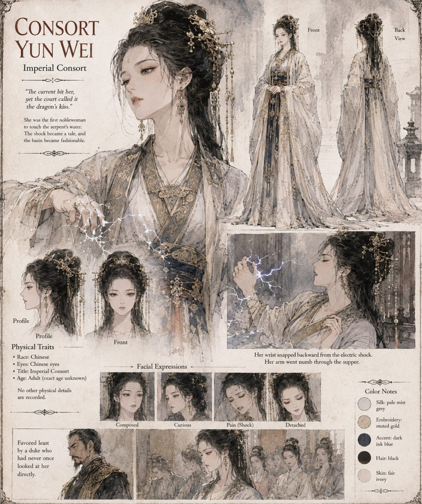

Yun Wei
Imperial Consort · the first courtier to touch the water
It is not faith, strictly, that makes the first courtier volunteer a hand. It is ambition, wearing faith as a coat because the coat fits better in public. Consort Yun Wei, favored least by a duke who has never once looked at her directly, dips two fingers into the basin before the assembled court and receives, for her trouble, a jolt that snaps her wrist backward and leaves her whole arm numb through supper. She does not scream. She laughs, high and startled, and calls it the most wonderful pain of her life.
Within a week every noblewoman at court who has heard the story secondhand is requesting an audience with the serpent as though it were a visiting dignitary rather than an eight-foot fish with an itch to defend its own tank. The shock becomes a tale, and the basin becomes fashionable. She will tell her granddaughters, decades later, in a country the old empire would no longer recognize, that she once touched Heaven with her bare hand, and none of them will ever learn what she actually touched.
“The current bit her, yet the court called it the dragon's kiss.”
Appears in The Heavenly Thunder-Serpent